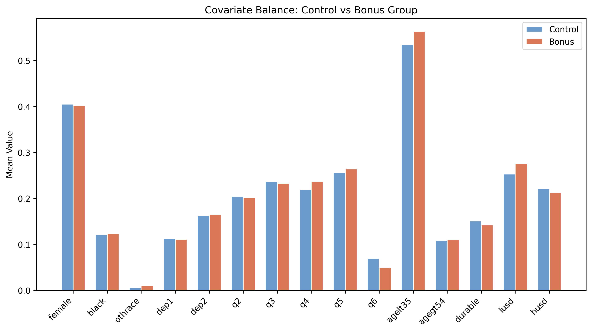
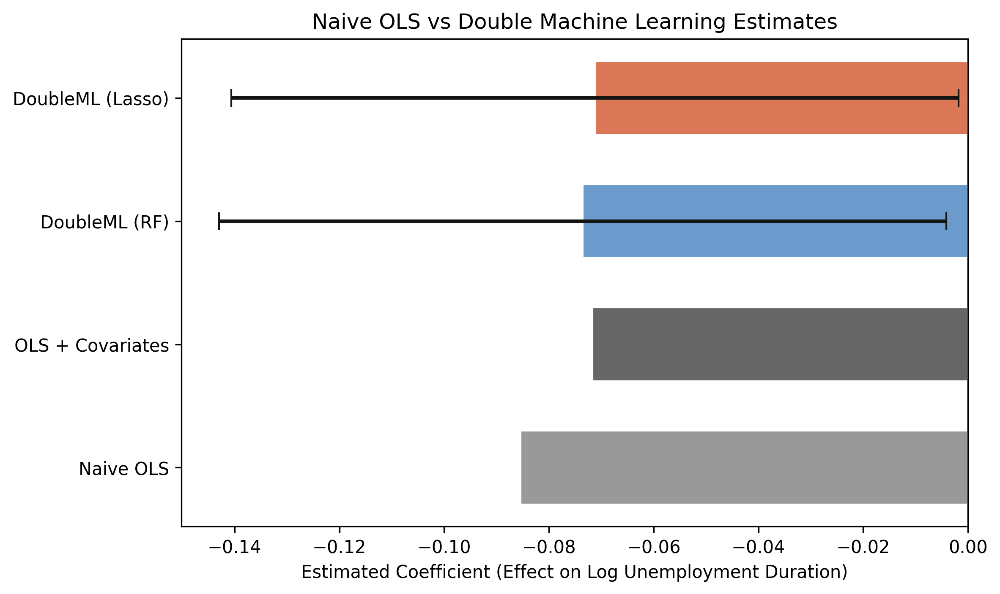
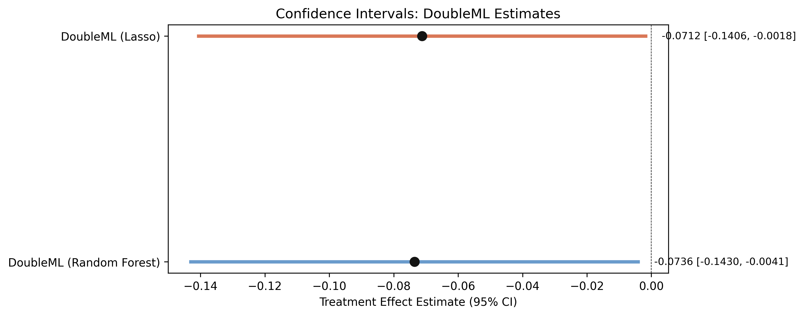

The lab: 5,099 claimants, randomly split 3,354 control vs 1,745 bonus
Outcome \(Y\) — inuidur1, log unemployment duration (mean 2.028, sd 1.215)Treatment \(D\) — tg, the bonus offer (1 = offered, 0 = control)Controls \(X\) — 15 demographic and labor-market covariates
Treatment was assigned at random , so \(D\) is independent of \(X\) by design — the estimand is a clean Average Treatment Effect (ATE) .
Because assignment is random, there is no confounding to remove — a crucial framing for the whole talk. The estimand is the ATE of the bonus offer on log duration. That is exactly what makes the RCT the right place to learn the method : we can check that flexible adjustment leaves the answer essentially unchanged.
Randomization worked: covariate means line up almost exactly across groups

Mean of each of the 15 covariates, control (steel) vs bonus (orange) — the bars are nearly the same height everywhere.
Balance check. female, black, the age indicators, and the economic indicators (durable, lusd, husd) are essentially equal across arms. This is the visual confirmation that any duration gap is unlikely to be driven by observable confounders — and the reason DML here buys precision, not de-confounding.
In an RCT, covariates can’t fix bias — but they can sharpen precision
Standard linear adjustment regresses \(Y\) on \(D\) and the covariates:
\[Y_i = \alpha + \beta\, D_i + X_i'\gamma + \epsilon_i\]
A linear \(X_i'\gamma\) can miss nonlinear structure in \(X \to Y\) . The leftover variation widens the standard errors.
This motivates ML. In an observational study, linear adjustment also risks residual confounding bias. In this RCT there is no bias to remove, so the payoff of flexible adjustment is variance reduction: absorbing more of inuidur1’s variation tightens the CI around the same ATE.
Linear adjustment already pulls the naive −0.0855 toward −0.0717
= LinearRegression() # naive: Y on D only "tg" ]], df["inuidur1" ])# coefficient → -0.0855 = LinearRegression() # add the 15 covariates linearly "tg" ] + COVARIATES], df["inuidur1" ])# coefficient → -0.0717 Naive OLS: −0.0855 . With covariates: −0.0717 . The shift is precision, not bias.
Two reference points before any ML. The naive estimate (−0.0855, an 8.6% reduction) becomes −0.0717 (7.2%) once we adjust. In a randomized design the move is not “removing confounding” — it is absorbing residual outcome variation. DML’s job is to do this absorption flexibly .
DML splits the outcome into a linear treatment term plus a flexible nuisance
\[Y = D\,\theta_0 + g_0(X) + \varepsilon, \qquad E[\varepsilon \mid D, X] = 0\]
\[D = m_0(X) + V, \qquad E[V \mid X] = 0\]
\(\theta_0\) is the causal ATE . \(g_0(X)\) and \(m_0(X)\) are nuisance functions — scaffolding we estimate but don’t report.
The Partially Linear Regression (PLR) model. Linearity is imposed only on the treatment D; covariates can enter g_0 arbitrarily flexibly. g_0 predicts Y from X; m_0 predicts D from X. In this RCT m_0 is roughly constant (the assignment probability), but g_0 still soaks up predictive structure in inuidur1.
Partial out both sides, then regress the residuals — that’s the whole trick
\[\tilde{Y} = Y - \hat{g}_0(X), \qquad \tilde{D} = D - \hat{m}_0(X)\]
\[\hat{\theta}_0 = \frac{\sum_i \tilde{D}_i\,\tilde{Y}_i}{\sum_i \tilde{D}_i^{2}}\]
Like noise-canceling headphones: ML learns how \(X\) drives \(Y\) and \(D\) , we subtract it, and only the \(D \to Y\) signal is left.
The partialling-out estimator. The residualised score (Y − g(X))(D − m(X)) is Neyman-orthogonal: small ML errors in the nuisance estimates do not bias θ to first order. That orthogonality is what lets us swap learners later and still trust the estimate.
Cross-fitting computes each residual out-of-sample to kill regularization bias
\[\hat{\theta}_0^{CF} = \frac{\sum_{k=1}^{K}\sum_{i \in I_k} \tilde{D}_i^{(k)}\,\tilde{Y}_i^{(k)}}{\sum_{k=1}^{K}\sum_{i \in I_k} \big(\tilde{D}_i^{(k)}\big)^2}\]
Split into \(K=5\) folds; each fold’s residuals come from models trained on the other four , then average.
Without sample-splitting, the ML penalty contaminates θ — regularization bias. Cross-fitting is like grading exams with a model that never saw that student’s work: each fold’s predictions are out-of-sample, which preserves valid standard errors, p-values, and confidence intervals.
Six lines in doubleml: wrap the data, pick a learner, cross-fit, read θ
= DoubleMLData(df, y_col= "inuidur1" , d_cols= "tg" , x_cols= COVARIATES)= RandomForestRegressor(n_estimators= 500 , max_depth= 5 ,= "sqrt" , random_state= 42 )= DoubleMLPLR(dml_data, clone(learner), clone(learner), n_folds= 5 )print (dml_plr_rf.summary) # tg: -0.0736 (SE 0.0354, p 0.0378)
The full pipeline. DoubleMLData declares the Y/D/X roles; the same Random Forest (500 trees, depth 5, sqrt features) serves both nuisance models via clone(); DoubleMLPLR does the 5-fold cross-fitting and returns θ with valid inference. Capping depth at 5 keeps the nuisance models from destabilising the cross-fitted residuals.
The bonus offer shortens log unemployment duration by 7.4%
−0.0736
\(\hat\theta_0\) , DML · Random Forest (SE 0.0354, \(p=0.038\) ) · 95% CI [−0.143, −0.004]
The Act III payoff. θ̂ = −0.0736 ⇒ ≈ 7.4% on the log scale, ≈ 7.1% proportional reduction in actual duration (e^−0.0736 − 1). t = −2.077, p = 0.0378 — significant at 5%. The interval [−0.1430, −0.0041] excludes zero but only barely; the magnitude is genuine but uncertain.
Swap Random Forest for Lasso and the answer barely moves: −0.0712
Random Forest
−0.0736 0.0354
0.038
[−0.143, −0.004]
Lasso
−0.0712
0.0354
0.044
[−0.141, −0.002]
Two utterly different learners, a 0.0024 gap — under 7% of one standard error.
Robustness via learner-agnosticism. Random Forest (nonparametric trees) and Lasso (penalized linear) disagree by 0.0024, both significant at 5%, both excluding zero. Neyman-orthogonality is why this works: the estimate doesn’t hinge on getting the nuisance functional form “right”. A strong signal the result isn’t a modeling artifact.
All four roads lead to ~−0.07: the methods agree on sign and size

Naive OLS (−0.0855) is largest; covariate OLS and both DML estimates cluster near −0.07. Dashed line = zero; only DML carries valid CIs.
The four estimators side by side. Naive OLS is the outlier in magnitude; adjustment and DML pull toward −0.07. The DML pair sits between the two OLS benchmarks — exactly what an RCT predicts, since g_0(X) is nearly flat when D ⊥ X. The difference DML makes here is the error bars, not the dot.
Both DML intervals exclude zero — but only just

DML-RF [−0.143, −0.004] and DML-Lasso [−0.141, −0.002]; near-identical width, upper bounds hugging zero.
Honesty slide. Both intervals clear zero, but the upper bounds (0.4% and 0.2% reduction) sit right at the boundary. So: a statistically significant negative effect, modest size, estimated with real uncertainty. The right policy reading is “the bonus plausibly helped,” not “the bonus cut duration by exactly 7.4%.”
Does flexible ML make this causal? No — the RCT does
Objection. “You ran fancy machine learning, so the −0.0736 must be the true causal effect.”
Response. Identification comes from randomization , not DML. ML only partials out \(X\) and delivers valid inference. DML disciplines adjustment — it cannot manufacture identification .
Steelman, don’t strawman. DML’s contribution is valid, learner-robust inference with flexible nuisance control — not a license to skip the identifying assumptions. Here the RCT supplies identification; on observational data the analyst must defend conditional independence and overlap separately. PLR also assumes a constant θ_0 (no heterogeneity); the IRM relaxes that.